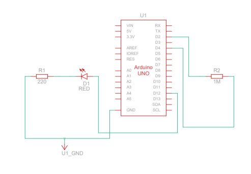

Arduino HW 13 - Touchy Feely Lamp
IGME 470
The Touchy Feely Lamp is a very simple but very fascinating circuit that uses the human body as a capacitor to complete the circuit and activate the lamp. This project uses the principle of capacitive sensing, where the human body acts as part of the electrical circuit.
When you touch the sensor, your body's natural capacitance changes the circuit's electrical properties, allowing the Arduino to detect the touch and turn on the LED. This is apparently similar to what is used in touch-screens, which is very interesting.


The parts used:
- 1x LED
- 1x 220 Ω Resistor
- 1x 1 MΩ Resistor

The circuit is extremely simple, requiring only an LED and two resistors. The Arduino uses the CapacitiveSensor library to measure the capacitance between two pins. When you touch the wire (or usually a piece of aluminum foil), your body adds capacitance to the circuit, which the Arduino detects and responds by lighting up the LED.
This project is an excellent introduction to capacitive sensing and shows how simple components can create interactive, touch-responsive projects.